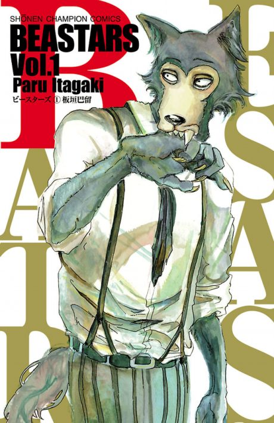

BEASTARS
BEASTARS
The anime covers the whole manga.
7.6AniList score
—Animeter, no votes yet
48episodes, 4 seasons
Rate it or report where you stopped
Anime finished. Where does the manga pick up?
StatusFully adapted
The Final Season adapts the story through to the manga's ending (196 chapters, 22 volumes), so there is nothing left to continue with. Some chapters may be condensed or reordered in the anime.